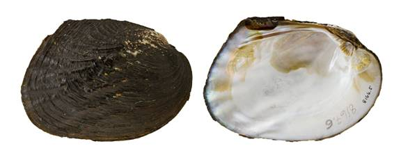

Megalonaias nervosa (Rafinesque, 1820)
Washboard

Megalonaias nervosa – Guadalupe River [Guadalupe River drainage], length 128.5 mm.
Identification
Shell structure: thin to thick, somewhat compressed to inflated.
Shell outline: rhomboid to ovate.
Posterior ridge: rounded or poorly developed, often obscured by ridges.
Shell color: small individuals may be dark green or yellowish-brown which turns to reddish-brown, brown or black with age.
Rays: smaller individuals may present very vague green rays; surface dull.
Shell texture: large plications originating near the umbo and curve upwards, which are sometimes poorly developed. Entire disk may be covered with wrinkled sculpture, especially in smaller individuals.
Umbo: low to high, broad, elevated slightly above the hinge line; umbo cavity deep.
Umbo sculpture: thick double-looped or v-shaped ridges, which extend out onto the umbo in a zigzag or cross-hatching pattern.
Pseudocardinal teeth: broadly triangular, heavy, high, and roughened, 2 teeth in left valve, divergent, 1 tooth in right valve.
Lateral teeth: long, thick, straight to slightly curved, 2 in left valve, 1 in right valve.
Interdentum: rather long and narrow to moderately wide.
Nacre: white, occasionally with purple or pink highlights, may show brassy blotches; iridescent posteriorly.
Other: not sexually dimorphic.
General range
Mississippi River basin from Louisiana north to Minnesota and west to Oklahoma and Kansas. Occurs in portions of the Ohio River basin and throughout the Tennessee and Cumberland River basins. Within Gulf Coast drainages occurs from the panhandle of Florida to central America.
Habitat
Medium sized streams to large rivers, lakes, and reservoirs. In riverine habitat occurs in nearshore bank and backwater habitats or mainchannel habitats such as riffles. Can be found in still to swift currents in mud, sand, or gravel substrates and under rocks, in crevices within bedrock slabs and amongst rubble.
Legal listing status